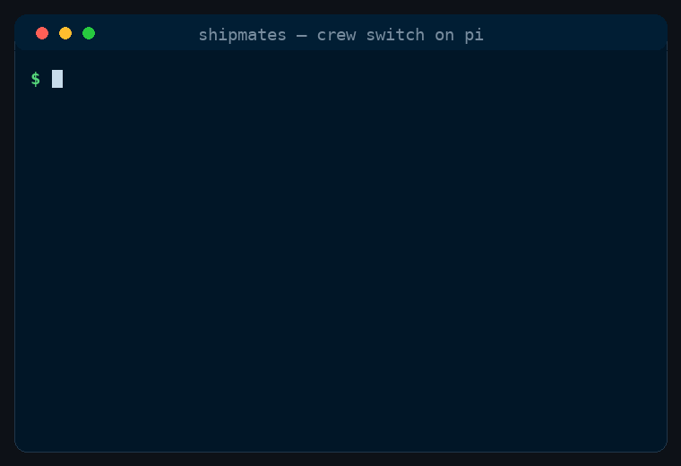

Pi
Pi crew switch
Keep the captain on a cloud model. Put the crew on the local models you pick.
A pi install now ships one small extension. It watches the seats a ship command spawns and checks each one against a switch you control. It starts Off, so installing it changes nothing until you turn it on.
Watch it work
Setting the switch, then a run where a doer is refused for naming a cloud model and then starts on a local one.

Who runs where
The captain is the chat you type into. It stays on whatever you picked with /model. The crew is the thirteen specialists a command spawns along the way. Two of them carry out orders — the builder and the tester. The rest judge: the planner, the product owner, the principal reviewer, and the design and delivery seats.
On the default Split setting, a doer runs locally and a judge stays on a cloud model. The planner needs to think, so it stays cloud. The builder needs to follow a written order, so it goes local.
- Planner cloud Reads the issue and cuts the work into units. Needs to think, so it stays in the cloud.
- Builder local Follows a written order from the planner, one unit per seat, on the models you ticked.
- Tester local Runs the build, the tests and the linters the plan named. Also local.
- Acceptance board cloud The product owner and the principal reviewer judge the pushed pull request.
- Pull request Handed to you to merge. Nothing here merges on its own unless you asked it to.
One run, seat by seat
Every crew seat reaches pi through one call, and the extension sees it before it starts. It reads the role, reads the model the captain named, and decides. A seat that passes starts; a seat that fails stops with a reason and the free models it could use instead.
-
You start it
You cloud
Type
/skill:shipmates-ship-issue 590and answer the setup card. Nothing about your chat model changes. - Before the seat starts Crew switch Reads the role, the model you named, your ticked list and your ceiling. It allows the spawn or refuses it with a reason.
- A doer carries out the order Doer local The order must name its outcome, owned paths, done-when and out of scope. Then it builds on the local model you chose.
- A judge decides Judge cloud Passes the same check on the other tag, then returns a verdict on the pushed work.
The three positions
| Position | Your chat | The crew |
|---|---|---|
Off | Your own model | Untouched. Nothing is checked or refused. |
Split | Your own model | A doer must be a local model you ticked. A judge must be a cloud model. |
Local | A local model you ticked | Every seat must be a local model you ticked. The tag table is not used. |
Off is the start. Installing the plugin does not turn it on, and setting it up does not either.
The table holds tags, not models. Each role is marked local or cloud. There is no model id and no size in it, and you can flip any role. Which model a seat gets is your call at spawn: a small local model for a narrow fix, a larger one for a wide build, a lighter cloud model for a routine review.
Local asks before it moves you. If you switch to Local while your chat is on a cloud model, you are asked which loaded local model to move to. It will not pick one. If you later choose a cloud model with /model, it asks before leaving Local.
What it refuses, and why
A refusal is the feature, not a fault. The plugin never swaps in a model you did not name, and it never falls back to the cloud on its own.
| Situation | What happens |
|---|---|
| No model named for a seat | Refused. It lists the free models of that kind and waits for you. |
| A doer sent to a cloud model | Refused. The role is tagged local; name a local model. |
| A judge sent to a local model | Refused. The role is tagged cloud. |
| A local model you did not tick | Refused. Tick it first, or name another. |
| More seats than your ceiling | It waits and tells you the cap and how many are already running. |
| The model you named is busy | It waits for that model. It is not moved to another one. |
A local doer needs a complete order. Before a doer starts on a local model, the task must already contain four things: Outcome:, Owned paths:, Done-when:, and Out of scope:. If one is missing, the spawn is refused and named. A small local model is not asked to fill in the gap, because that is where it goes wrong. An order that passes gets one extra line: follow the order, do not widen it, stop and report if it is ambiguous.
Judges are not held to that checklist. Thinking is the job.
Install and first run
shipmates install --harness pi
# Pi crew plugin installed. Run /shipmates-crew once.
# The switch starts at Off and does not change /model.Then open pi and run /shipmates-crew. It shows the current position and asks you to pick one. The extension lands at .pi/extensions/shipmates-crew/index.ts, or ~/.pi/agent/extensions/shipmates-crew/index.ts on a global install.
The plugin reads its settings from ~/.pi/agent/shipmates-crew.json. That file holds the switch, any role tags you flipped, the models you ticked, and your concurrency ceiling. An absent file means Off.
{
"schemaVersion": 1,
"switch": "Split",
"roles": {},
"ticks": ["<provider>/<model>"],
"ceiling": 4
}The ceiling is yours, not a shipped number. It is how many crew seats may run at once while your ticked models are loaded. A sensible starting point is one seat per loaded model. It is not a default the plugin assumes.
What is not wired yet
Stating this plainly, because it changes what you can rely on today.
- The command sets the switch. It does not yet walk you through connecting local servers, ticking their models, or choosing the ceiling. Today those live in the settings file.
- It does not ask your servers what is loaded. The ticked list is treated as the available set. If you unload a model, remove it from the list.
- The ceiling is checked against seats in flight, not against machine load. It cannot see what another client is doing to the same model.
- Pi's crew spawn has not been proven end to end. The harness row records pi's
crew_resolveasno— see the harness matrix for the current evidence rather than taking this page's word for it.